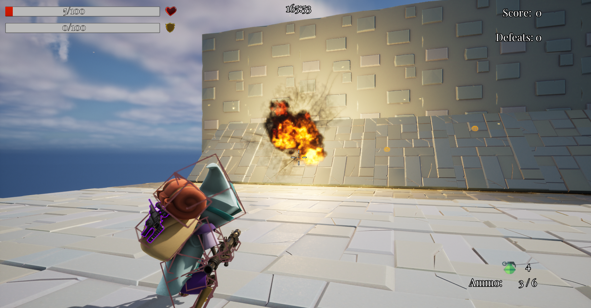
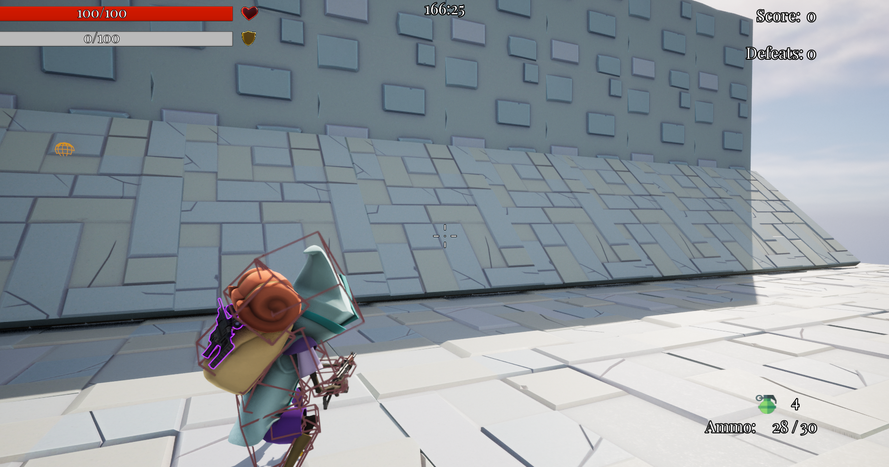
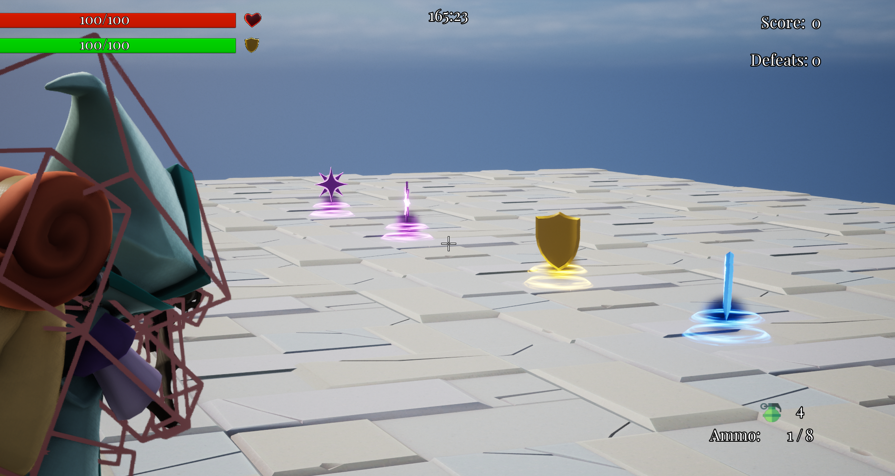

Бакалаврська робота: Blaster Game
Bachelor's Thesis: Unreal Engine 5
Blaster Game — інтерактивна 3D-гра, створена як демонстрація можливостей Unreal Engine 5. Проєкт досліджує дизайн рівнів, шутерну механіку та оптимізацію візуальних ефектів.
Актуальність теми
Проєкт демонструє застосування сучасних інструментів Unreal Engine 5 у створенні геймплейного досвіду, що є важливим для індустрії відеоігор і освіти у сфері геймдеву.
Мета дослідження
Розробка ігрового прототипу з елементами стрілянини, використовуючи UE5, а також аналіз інструментів рушія та їх ефективності у геймдизайні.
Основні завдання
- Ознайомлення з функціоналом Unreal Engine 5
- Створення дизайну ігрового рівня
- Реалізація механік: рух, стрільба, інтерфейс
- Оптимізація візуальних ефектів
- Презентація результату
Очікувані результати
Фінальний прототип гри на UE5, що демонструє якісну графіку, геймплей та технічне виконання. Може слугувати базою для майбутніх розробок або портфоліо.
Скріншоти


